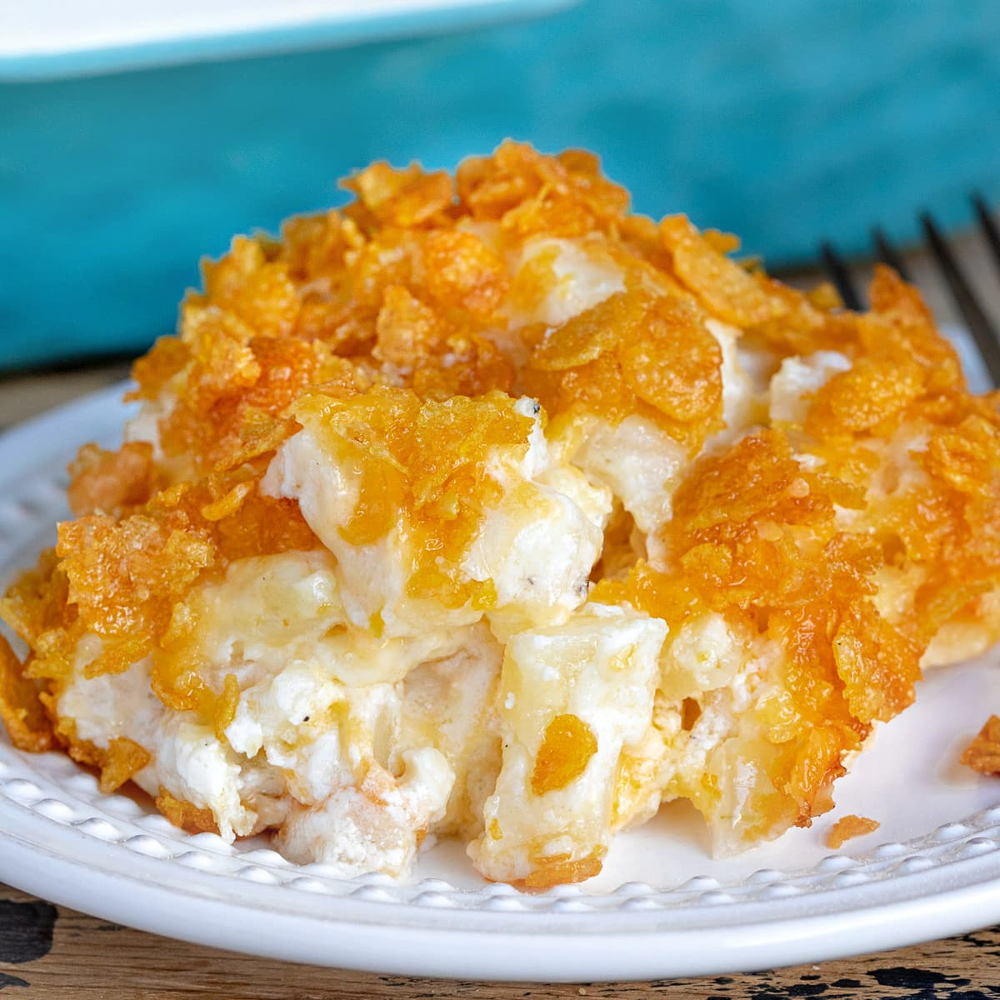

Mary Potatoes

Mary Potatoes
Cheesy potatoes to die for!
Ingredients
- 2lbs Frozen diced potatoes - Ore Ida, thawed
- 8 tablespoons salted butter
- 16 oz sour cream
- 1 (10.5oz) can cream of mushroom soup
- kosher salt and pepper
- 1 teaspoon dried parsley
- 8 oz sharp cheddar - grated
- 2 cups corn flakes - crushed
Cooking Instructions
- Preheat the oven to 350 degrees Ft
- Spray a 9x13 baking dish with nonstick spray
- Melt the butter in a large bowl
-
Whisk the sour cream and the soup into the melted butter until combined
- Add a big pinch of salt and pepper
- Fold in thawed potatoes - stir until completely incorporated
- Spread the mixture in the baing dish
- Top with grated cheddar
- Sprinkle the top with corn flakes
- Bake for 60 minutes
Back to Home